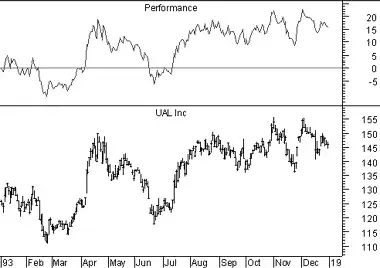

The Performance indicator displays a security's price performance as a percentage. This is sometimes called a "normalized" chart.
The Performance indicator displays the percentage that the security has increased since the first period displayed. For example, if the Performance indicator is 10, it means that the security's price has increased 10% since the first period displayed on the left side of the chart. Similarly, a value of -10% means that the security's price has fallen by 10% since the first period displayed.
Performance charts are helpful for comparing the price movements of different securities.
The following chart shows United Airlines and its Performance indicator. The indicator shows that United's price has increased 16% since the beginning of 1993.
The Performance indicator is calculated by dividing the change in prices by the first price displayed.